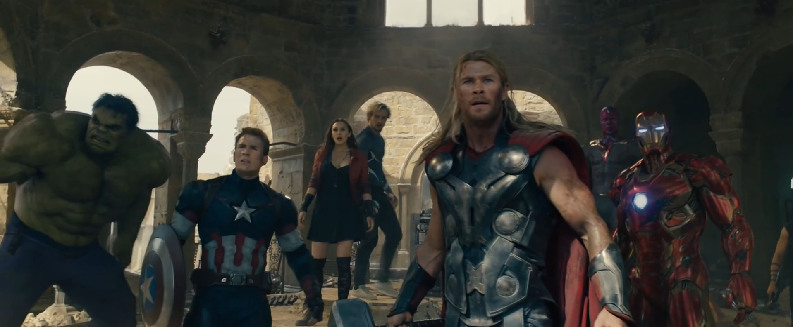
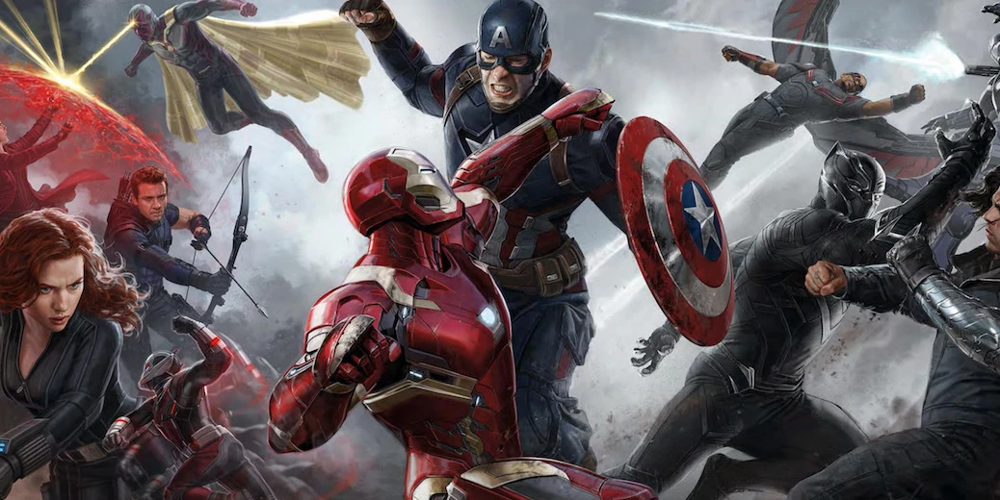
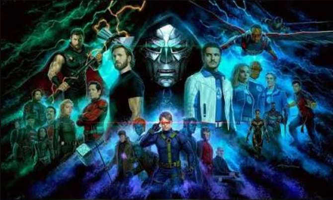

Os Vingadores ⚔️
Os Vingadores são uma das principais equipes de heróis do Universo Cinematográfico da Marvel.
O grupo surgiu quando uma grande ameaça fez com que heróis com diferentes habilidades precisassem trabalhar juntos.
Ao longo das fases do UCM, a formação dos Vingadores mudou diversas vezes, com novos personagens entrando para a equipe e outros deixando o grupo.
Fase 1 - Formação dos Vingadores

-
Homem de Ferro (Tony Stark): bilionário e inventor que utiliza uma armadura tecnológica para combater ameaças.
Ele é um dos primeiros heróis apresentados no UCM e é recrutado por Nick Fury para participar da Iniciativa Vingadores. -
Capitão América (Steve Rogers): soldado que recebeu o Soro do Super-Soldado durante a Segunda Guerra Mundial.
Após passar décadas congelado, desperta nos tempos modernos e se torna um dos principais líderes dos Vingadores. -
Thor: príncipe de Asgard e filho de Odin, capaz de controlar poderes relacionados aos raios e utilizar o martelo Mjolnir.
Depois de aprender a agir como um verdadeiro herói, passa a proteger a Terra e se junta aos Vingadores. -
Hulk (Bruce Banner): cientista que, após ser exposto à radiação gama, passa a se transformar no poderoso Hulk.
É recrutado por Natasha Romanoff para ajudar na luta contra Loki em Os Vingadores. -
Viúva Negra (Natasha Romanoff): uma habilidosa espiã e agente da S.H.I.E.L.D. Inicialmente trabalha para Nick Fury e
é enviada para reunir outros heróis, tornando-se posteriormente uma das integrantes mais importantes dos Vingadores. -
Gavião Arqueiro (Clint Barton): agente da S.H.I.E.L.D. especializado em arco e flecha e combate.
Já trabalhava com Natasha antes da formação da equipe e participa da batalha de Nova York.
Fase 2 - Expansão da Equipe

Após a batalha de Nova York, os Vingadores continuam atuando juntos.
Em Vingadores: Era de Ultron, novos personagens passam a fazer parte da equipe:
-
Feiticeira Escarlate (Wanda Maximoff): possui poderes de manipulação de energia e magia, além de habilidades relacionadas à
mente e à realidade. Inicialmente está ao lado de Ultron, mas muda de lado e ajuda os Vingadores. -
Mercúrio (Pietro Maximoff): irmão de Wanda, possui velocidade sobre-humana. Ele ajuda os Vingadores contra Ultron,
mas acaba morrendo durante a batalha de Sokovia. -
Visão: uma forma de inteligência artificial criada a partir da tecnologia de Ultron, da Joia da Mente e de outros elementos.
Após ajudar a derrotar Ultron, torna-se oficialmente um membro dos Vingadores. -
Máquina de Combate (James Rhodes): amigo de Tony Stark e piloto da armadura Máquina de Combate.
Embora já atuasse como herói antes, passa a integrar a formação dos Vingadores posteriormente.
Fase 3 - Novos Heróis e Divisão dos Vingadores

Na terceira fase, o grupo passa por grandes mudanças após os acontecimentos de Capitão América: Guerra Civil.
-
Pantera Negra (T'Challa): rei de Wakanda e herói equipado com um traje feito de vibranium.
Ele participa da Guerra Civil e posteriormente coopera com os Vingadores na luta contra Thanos. -
Homem-Aranha (Peter Parker): jovem herói de Nova York que recebe habilidades após ser picado por uma aranha geneticamente modificada.
Tony Stark o recruta para participar da Guerra Civil e posteriormente ele ajuda os Vingadores contra Thanos. -
Doutor Estranho (Stephen Strange): antigo cirurgião que aprende artes místicas após um acidente mudar sua vida.
Ele se envolve na luta contra Thanos e se torna fundamental na batalha pelo destino do universo. -
Capitã Marvel (Carol Danvers): uma das heroínas mais poderosas do UCM. Após receber seus poderes, passa a atuar principalmente no espaço,
mas retorna à Terra para ajudar os Vingadores contra Thanos.
Fase Atual - Uma nova Geração

A fase atual amplia ainda mais o número de heróis relacionados ao universo dos Vingadores. Personagens como Homem-Formiga, Vespa,
Capitão América (Sam Wilson), Capitã Marvel, Shang-Chi, Wong, Doutor Estranho e outros continuam envolvidos em acontecimentos que
podem levar a uma nova formação da equipe.
Os Thunderbolts, apresentados como uma equipe formada por personagens com diferentes passados, também passam a ocupar um espaço importante nesse período.
Após os acontecimentos de Ultimato, não existe uma formação permanente dos Vingadores equivalente à equipe original.
O UCM apresenta diversos heróis que podem participar de futuras formações, mas a composição exata da próxima equipe depende dos acontecimentos das próximas produções.
A próxima grande reunião dos heróis está relacionada a Avengers: Doomsday, que faz parte da atual fase do UCM e está prevista para continuar a história envolvendo o Multiverso.
Portanto, a nova formação dos Vingadores ainda está sendo construída dentro da narrativa.